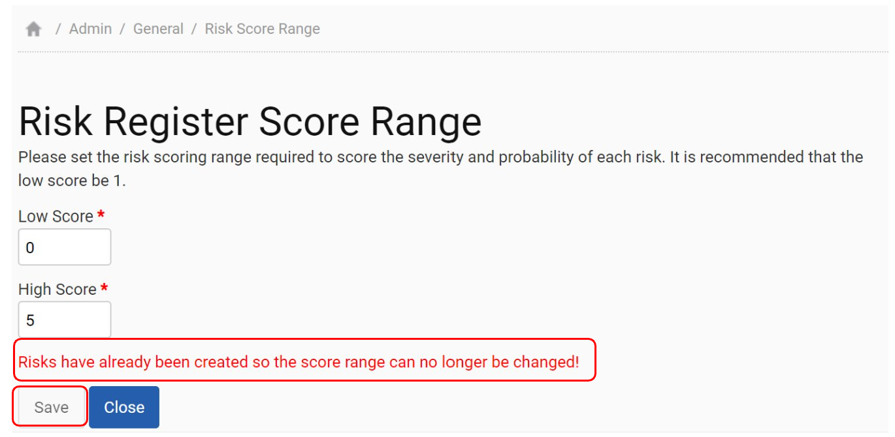

If your organisation will be monitoring risks, then before these can be added the ‘Risk Score Range’ must be set via ‘Admin Settings > Risk Score Range’.
The Admin User should set the risk scoring range that is required by the organisation to score the severity and probability of each risk. It is recommended that the low score be 1. Once the ‘Risk Score Range’ has been set and data has been uploaded it is no longer possible to amend the scoring range.
